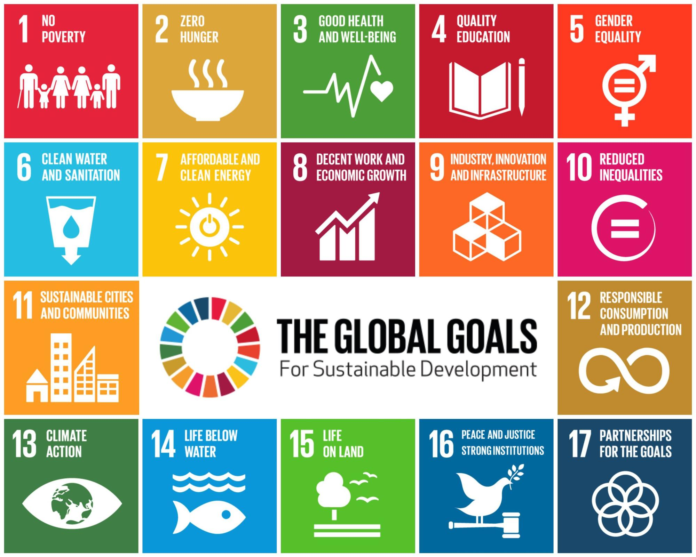

01 · The theme
Sustainable development
through AI.
AI can help accelerate progress toward the United Nations Sustainable Development Goals when it is shaped around real needs and real people.

Why this matters
From healthcare and education to agriculture, climate resilience, and sustainable cities, artificial intelligence has immense potential to address critical global challenges.
We are inviting solutions that go beyond describing a model. The focus is on usable systems that directly contribute to one or more of the UN Sustainable Development Goals and have a path toward broader deployment.
What this session seeks
- Promote AI for real-world sustainability challenges.
- Encourage practical, deployable AI systems.
- Foster collaboration between technology, domain, and social innovators.
- Identify solutions with potential for broader deployment.